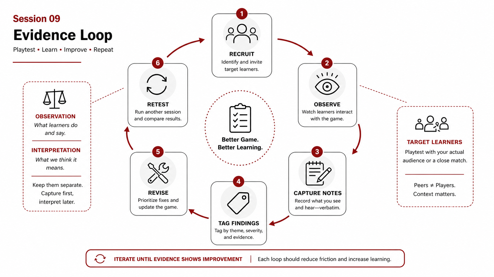
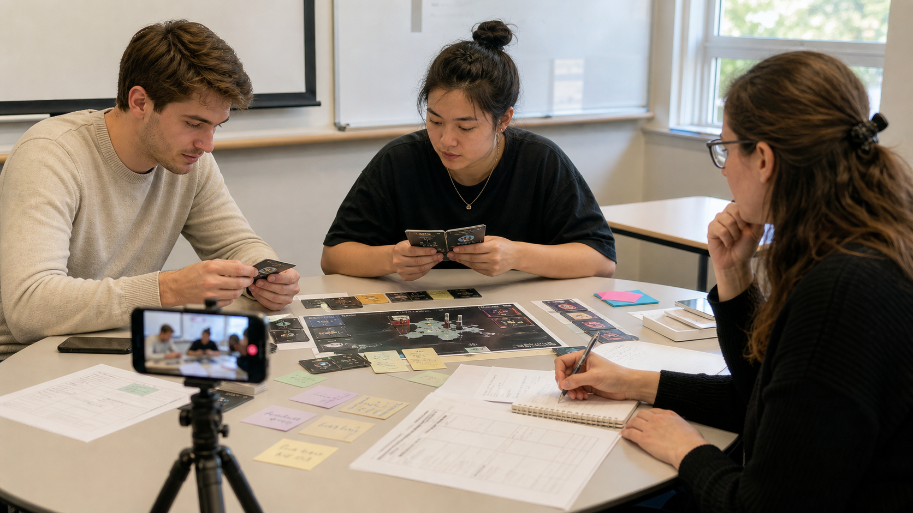
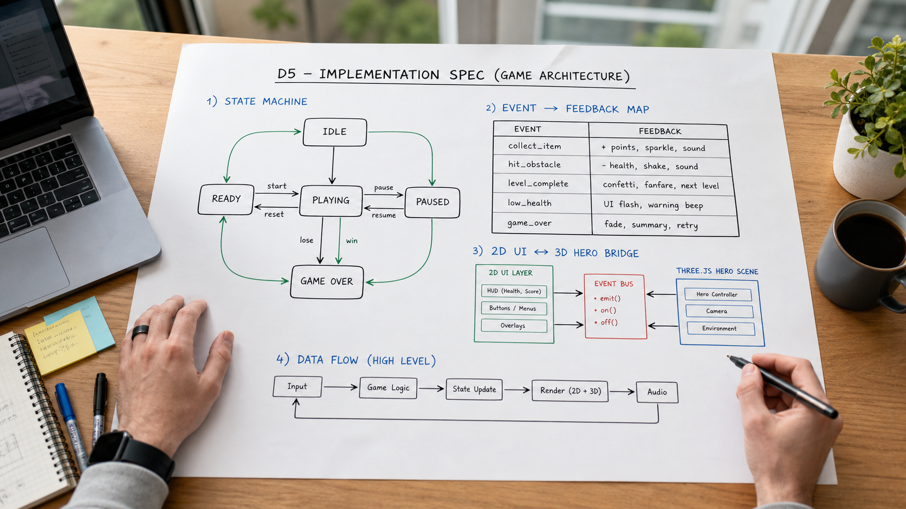

By the end of this session, you can…
- LO 9.1Write a playtest protocol a stranger could run — 45-minute script, consent language, data collection sheet.
- LO 9.2State three hypotheses about your loop before the playtest; each with an observable that would falsify it.
- LO 9.3Recruit three or more target learners; state how they differ from your peers.
- LO 9.4Run the protocol once, end to end, with a peer as a dry-run before contact with real learners.
- LO 9.5Plan your revision budget — in advance, not after the results.
Peers are not cheaper target learners
Peers are too forgiving, too design-aware, and too invested in you. They will play the game you meant to build. Target learners will play the game you actually built. That difference is where most of your design debt lives.
| Playtester type | What they surface | What they hide |
|---|---|---|
| Peer from this course | Craft issues; missing affordances they would have added. | All learning-transfer issues. All motivation issues for your real population. |
| Adjacent expert (not a peer) | Content errors, category slips, domain risks. | Learner confusion at onboarding. |
| Target learner, pre-session | Baseline familiarity, motivation, onboarding stumbles. | Transfer. Retention. |
| Target learner, in context | Context-dependent failure (the 2am test). | Longitudinal effect. |
A spec with "target learner access unavailable" documented is stronger than a report padded with peer sessions labeled as playtests. Own the limit; it shapes what D5 claims.
A script, not a vibe
| Time | What happens | What you capture |
|---|---|---|
| 00:00–05:00 | Greet, consent, baseline question ("what do you already know about X?"). | Baseline note + demographics if relevant. |
| 05:00–08:00 | Onboarding. You read the opening script from your facilitator guide. | Time to first decision; clarifying questions asked. |
| 08:00–25:00 | Play. You observe silently (see Session 07). | Did / Said / Stuck observations. |
| 25:00–35:00 | Debrief — three questions, in order. No follow-ups that lead. | Learner paraphrase of objectives; self-report of confidence. |
| 35:00–40:00 | Post-test vignette: ask learner to reason about a fresh case. | Transfer signal — did they use the move the game trained? |
| 40:00–45:00 | Thank; ask for one thing that would make them recommend the game to a colleague. | Recommendation barrier — recurring themes are gold. |



Three falsifiable statements, before you run
Write three hypotheses about your game. Each names an observable that, if you saw it, would make you change the design. Submit this with your protocol; reviewers will check your D4 against it. Hypotheses written after the data are stories, not science.
The On-Call, pre-playtest
- H1 · Discrimination
- Target residents will correctly identify the discriminating test ≥60% of the time by round 3. Falsifier: accuracy stays below 50% across rounds.
- H2 · Escalation timing
- Residents will call the attending within the indicated window on ≥2 of the 3 judgment vignettes. Falsifier: calls delayed past window on ≥2 vignettes.
- H3 · Transfer
- On the fresh post-test vignette, ≥2 of 3 residents will name a leading diagnosis and two differentials within 3 minutes. Falsifier: learners freeze or produce a differential list without a leading.
Falsifiable or not? Make the call.
You will write three hypotheses before every playtest. Two will be falsifiable. One will slip past you disguised as a statement but be unfalsifiable on inspection — and that one will burn a playtest session you cannot afford. Train your ear here, in the low-stakes sandbox.
Hypothesis falsifier — call each one
~4 min · click to answerEach line is a candidate playtest hypothesis a designer wrote. Decide whether there exists an observation you could make during playtest that would prove it wrong. If yes, it is falsifiable. If no — if every outcome could be read as "support" — it is not.
Decide in advance how much you'll change
Most designers, seeing a playtest fail, either rewrite the game or dismiss the evidence. Pre-commit to a revision budget — how much you will change before you know what broke. Two to five specific changes is a healthy band for the week between D4 and D5.
Six sections, ~6 pages
| Section | Contents |
|---|---|
| 1. Protocol | Script, consent, data sheet. Link to version in repo. |
| 2. Participants | Count, how recruited, how they differ from peers, what limits to acknowledge. |
| 3. Pre-registered hypotheses | Verbatim from the protocol submission. Do not rewrite. |
| 4. Observations | Did / Said / Stuck table; verbatim quotes (anonymized); transfer-vignette transcripts. |
| 5. Verdict per hypothesis | Supported / mixed / falsified. Cite evidence. |
| 6. Revision plan | Ranked ≤5 changes; which hypothesis each addresses; which observations you are declining to act on and why. |
Turning 45 minutes of transcript into evidence
Playtest data is cheap to collect and expensive to read. A single 45-minute session produces 20+ pages of think-aloud transcript plus observation notes. Reading that honestly — without confirmation-biasing toward your favorite mechanics — is hard. AI Studio is the second reader you wish you had, and unlike a human it has no stake in your game.
Use case · Tag transcript against your pre-registered hypotheses
Gemini 2.5 · temperature 0.2This is the single highest-leverage use of AI in the program. You wrote three hypotheses before the playtest. The model reads the transcript and marks every utterance or observation as supporting, contradicting, or silent on each hypothesis. No interpretation — just evidence location.
You are a qualitative coder tagging playtest data against
pre-registered hypotheses. You will be given:
(1) 1-3 hypotheses, each a falsifiable statement.
(2) A transcript + observation notes.
For EACH hypothesis, produce:
SUPPORTING evidence — verbatim quotes / observation lines.
CONTRADICTING evidence — verbatim quotes / observation lines.
AMBIGUOUS — evidence that could be read either way; explain why.
Rules:
- Quote verbatim. Include line numbers or timestamps if given.
- Do NOT paraphrase. Do NOT summarize across quotes.
- If a hypothesis has zero evidence in either direction, say so.
Do not fabricate support.
- Do not conclude which hypotheses "won." Your job is evidence
location only. The designer decides.
Refusal rule: if a hypothesis is not falsifiable ("the game will be
engaging"), refuse to tag it and explain why.
Hypotheses (pre-registered):
H1. At least 3 of 5 players will correctly name lactate as the
discriminating test after playing scenario 2.
H2. Players will spend >60s on the differential screen before
committing (indicator of reflection, not guessing).
H3. No player will report that the time pressure felt "arbitrary" on
the post-play debrief.
[Transcript of playtest #3 pasted below, 1,800 lines.]
Individual runs preserve each player's full arc. The cross-player run shows whether patterns are real or one-off. You need both; they answer different questions.
Use it when
You have pre-registered hypotheses (from Session 09 checklist) and transcripts. The model's lack of investment in your game is the feature — it won't spare your feelings.
Don't use it when
You have no pre-registered hypotheses. Post-hoc pattern-finding in a transcript is what got replication science in trouble; do not import the problem.
Use case · Draft the D4 playtest report from tagged data
Structured synthesis · temperature 0.3Once each transcript is tagged, pass the tag sets back to the model with the D4 structure and ask for a draft. You will rewrite all of it — but you will rewrite faster than you would draft.
Using the tagged evidence sets (attached), draft sections 3-5 of my
D4 playtest report:
3. Evidence per hypothesis (supporting / contradicting / ambiguous).
4. Design decisions made in response (mechanic / scene / copy /
no-change — and which hypothesis's evidence drove each).
5. What I would test next, and the hypothesis I would pre-register.
Constraints:
- Do not argue that ambiguous evidence supports a hypothesis.
- Do not propose design changes for hypotheses that had zero evidence.
- In section 5, name specifically which new constraint or learner
behavior the next playtest would surface.
Watch for language like "while some players struggled, most…" — this is the model smoothing your failure cases out of the report. Your job in the rewrite is to restore them. Playtests are only useful if the failures survive to inform design.
Before next week
The evidence discipline behind playtesting
This session turned a hypothesis into a protocol. Today's handout goes deeper on the move from opinion to evidence — test types, observation protocols, synthesis, and how to decide what to revise next.
Playtesting Toolkit
Early and repeated playtesting for educational game prototypes: what to test, who to test with, how to observe without contaminating, how to translate evidence into revision decisions. Includes an evidence-loop visual and common failure modes.
Why this week Run your first playtest against the toolkit's protocol — not your instincts. Bring your synthesis notes to Session 10 so the audit has real data to critique.
Before you move on…
Four questions on this session's concepts. Choices lock on first click — formative only.